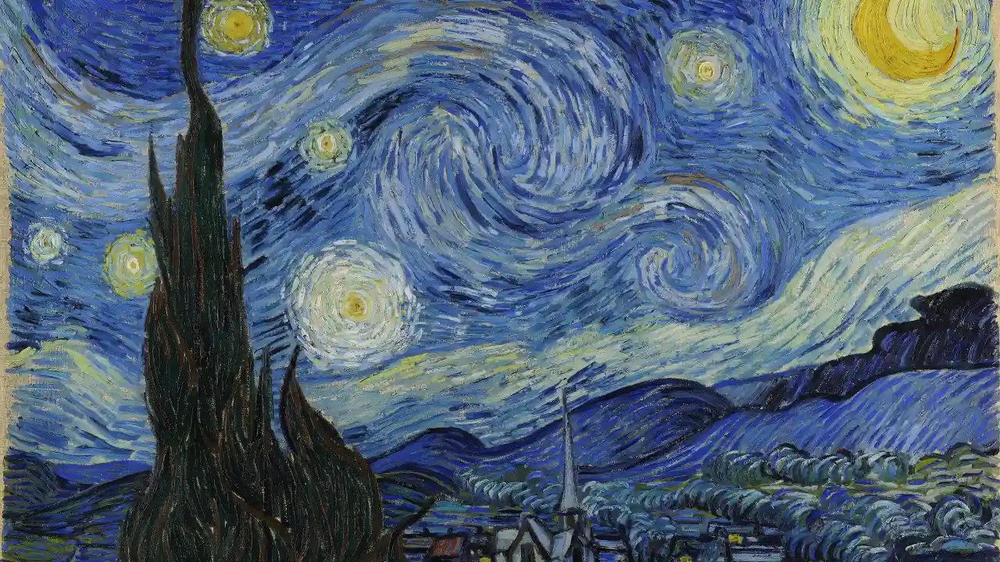
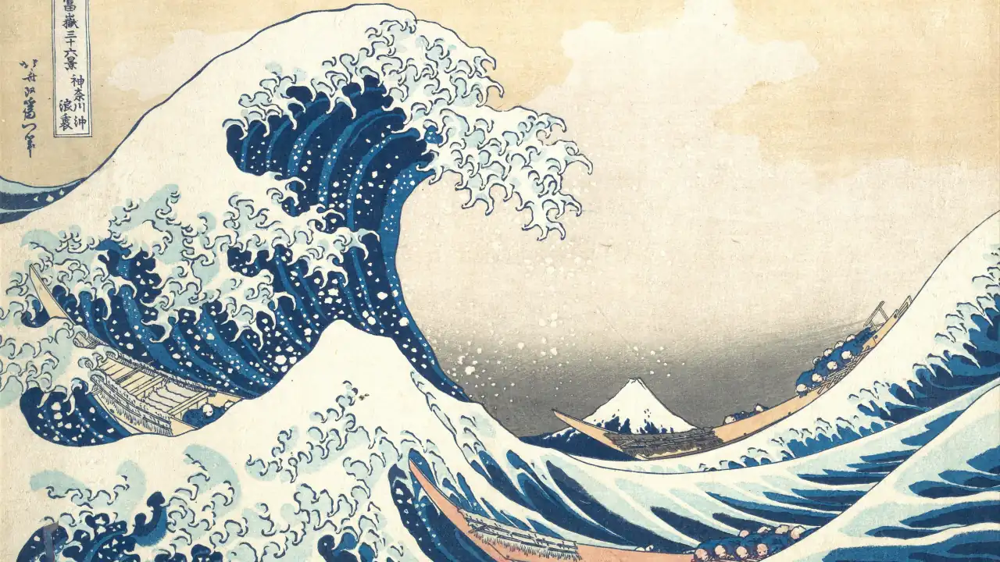

Portraits and mats
Portrait photos on Samsung The Frame: a gallery mat, not a crop
Short answer: The Frame's screen is a 16:9 landscape, so a portrait photo either gets cropped, which often cuts off heads, or needs a border. Frame TV Art Manager shows portraits, square art, panoramas, and small images whole on a deep charcoal gallery mat, faintly tinted from the art's own colors and calm in a dark room. You can also pair two portraits side by side or keep cropping.
Why portraits look wrong on The Frame
A portrait photo is taller than it is wide; The Frame is 16:9 wide. Filling the screen means throwing away most of the picture's height, usually the top and bottom, which is where heads and feet are. Samsung's mattes add a border, but owners often find the default off-white matte too bright, especially at night.
Before and after
A portrait painting


A nearly square painting


A landscape that already fits

Artwork: Pierre-Auguste Renoir, Two Sisters (On the Terrace), 1881, Art Institute of Chicago, public domain (CC0). Vincent van Gogh, The Starry Night, 1889, public domain. Katsushika Hokusai, The Great Wave off Kanagawa, c. 1831, public domain. Every image on this page was rendered by Frame TV Art Manager at 3840×2160 and scaled down for the web.
When it crops and when it mats
Every picture goes through the same decision:
- Landscape pictures fill the screen when cropping removes at most 25% of the image (
IMAGE_MAX_CROP_PERCENT) and filling needs no more than 3× enlargement (IMAGE_MAX_UPSCALE). That covers 3:2 camera photos and 4:3 paintings. - Everything else is shown whole: square art, very wide panoramas, and small images that would turn to mush if blown up.
- Portraits follow
PORTRAIT_MODE:pad(default, shown whole),collage(paired side by side), orcrop(fill the screen).
Set IMAGE_MAX_CROP_PERCENT=100 if you always want the screen filled.
How the gallery mat looks
- Deep charcoal by default. It stays calm in a dark room at night instead of glowing like a white border.
- Tinted from the art. The mat is faintly shifted toward the picture's own colors, so it looks chosen rather than generic.
- A lighter bevel around the opening, and the opening sits slightly above center, the way picture framers cut mats.
- A soft warm greige (never bright white) is used only when the art's edge is too dark to stand out against charcoal. Force either tone with
IMAGE_MAT_TONE=darkorlight. - Prefer a blurred backdrop?
IMAGE_PAD_STYLE=blurfills the screen with a darkened, desaturated blur of the image instead.
Two portraits side by side
With PORTRAIT_MODE=collage, portraits are paired on one screen. Pairs are matched by color,
lightness, and shape, so a warm sunset portrait isn't stuck next to a cold blue one. Both images appear whole, at equal
height, in a double-opening gallery mat. A portrait without a good partner waits for one instead of being forced into a bad pair.
Samsung's own mattes
The Frame can also draw its own matte around a picture. MATTE_STYLE sets one for every upload, as
style_color: styles include modernthin, modern, modernwide, flexible,
shadowbox, panoramic, triptych, mix, and squares; colors include
black, neutral, antique, warm, polar, sand, sage,
navy, and more. The default is none, full screen.
For one picture, add a mattes.json file to the artwork folder:
{
"_default": "none",
"wedding-portrait.jpg": "shadowbox_polar"
}An override keeps working after the manager renames the file. An invalid mattes.json stops the sync before any TV is touched, so a typo can't go unnoticed.
The gallery mat is part of the picture itself, so with the default MATTE_STYLE=none you won't get a border inside a border.
PORTRAIT_MATTE sets the matte the TV uses when it shows art in portrait orientation; it defaults to the same value as MATTE_STYLE.
Before each upload the manager checks the matte against the list the TV reports, and a matte the TV doesn't offer is replaced with none and logged as a warning.
Settings at a glance
| Setting | Default | What it does |
|---|---|---|
PORTRAIT_MODE | pad | pad, collage, or crop |
IMAGE_PAD_STYLE | mat | mat (gallery mat) or blur |
IMAGE_MAT_TONE | auto | auto, dark, or light |
IMAGE_MAX_CROP_PERCENT | 25 | Most of a landscape picture that may be cropped away |
IMAGE_MAX_UPSCALE | 3 | Largest enlargement before a picture is matted instead |
SMART_CROP_ENABLED | false | Crop toward the interesting part instead of the center |
MATTE_STYLE | none | Samsung's own matte for every upload |
PORTRAIT_MATTE | same as MATTE_STYLE | Samsung's matte when the TV shows art in portrait orientation |
Questions people ask
How do I show portrait photos on a Samsung Frame TV without cropping?
Use a border instead of a crop. Frame TV Art Manager does this by default: portraits are shown whole on a charcoal gallery mat tinted toward the photo's colors. Samsung's own mattes are another option.
Why does my Frame TV crop my photos?
The Frame's screen is 16:9. Any picture with a different shape has to be either cropped or bordered to fill it, and portraits lose the most.
Can I put two portrait photos side by side on The Frame?
Yes. With PORTRAIT_MODE=collage, Frame TV Art Manager pairs portraits matched by color, lightness, and shape and shows both whole in a double-opening mat.
How do I get rid of the white matte on my Frame TV?
Choose a different matte or none in Art Mode on the TV. With Frame TV Art Manager, MATTE_STYLE=none (the default) uploads without a Samsung matte, and the gallery mat is charcoal rather than white.
Will a gallery mat make my photo smaller?
Yes, a portrait shown whole is narrower than the screen. That's the trade-off for keeping heads and edges intact. Set PORTRAIT_MODE=crop if you prefer to fill the screen.